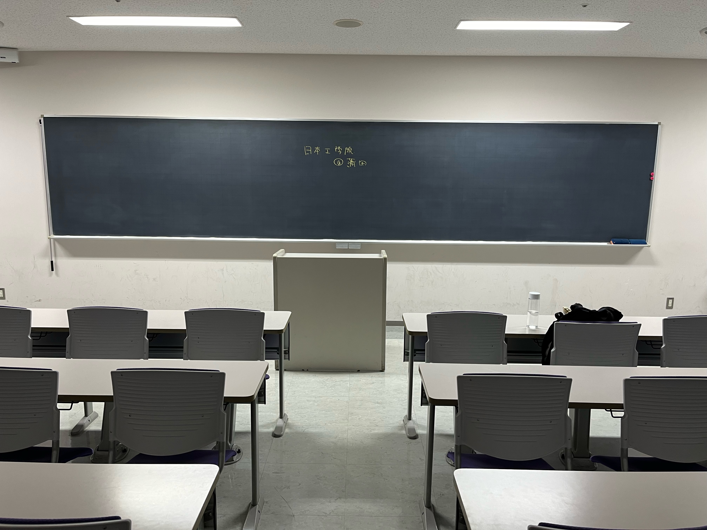

院内のいろいろな施設
3号館の20階建ての高層ビルには様々な部屋があります。
図書館(4F)

東京工科大と共有（wi-fiが弱い...）
でも広い空間で落ち着く！
具体的には、30,000冊以上の蔵書を誇る図書館。
研究発表やプレゼンテーション設備も完備しているそう。看護系の医学書が多い。
講義室(7F)

東京工科大学側に位置する。
CGやCAD・3Dプリンター、ゲームを制作するためのPC実習室。最新ソフトを各マシンに備えている教室もあります。
- 座学の講義室： 黒板を使用 テレビ画面に投影
- PCの実習室： ホワイトボードを使用プロジェクターに投影